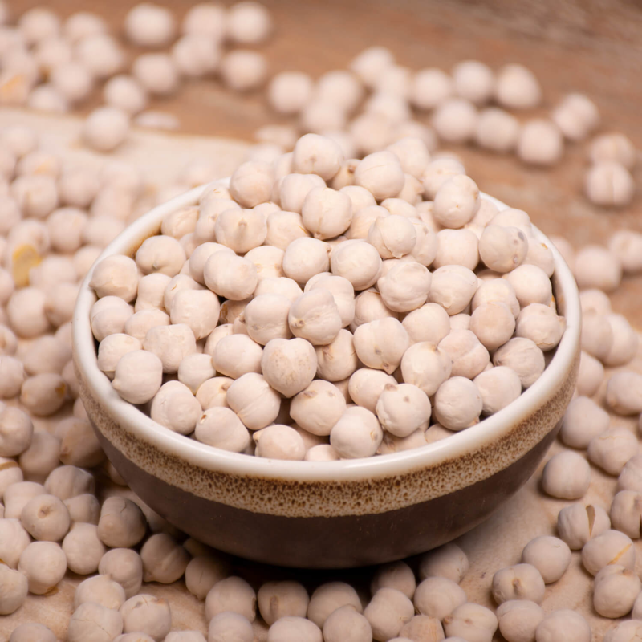

Beyaz leblebi antioksidan kaynağıdır. - Bağırsakları tembellikten kurtarır ve hızlı şekilde çalışmasına olanak verir. - Zengin protein kaynağı, vitamin ve minerallerle uzun süre tok kalma şansı sağlayarak kilo kaybına destek olur. - Yüksek lif oranına sahip olması sindirim sistemini güçlendirir.
